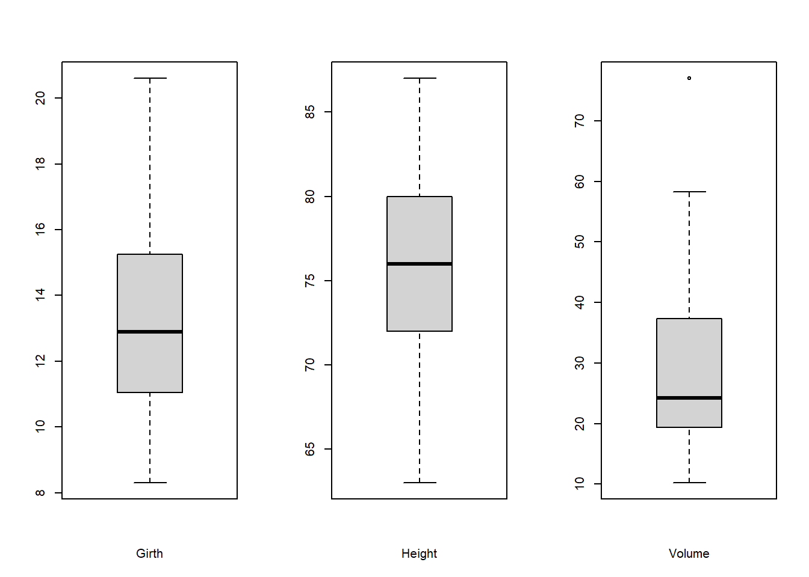
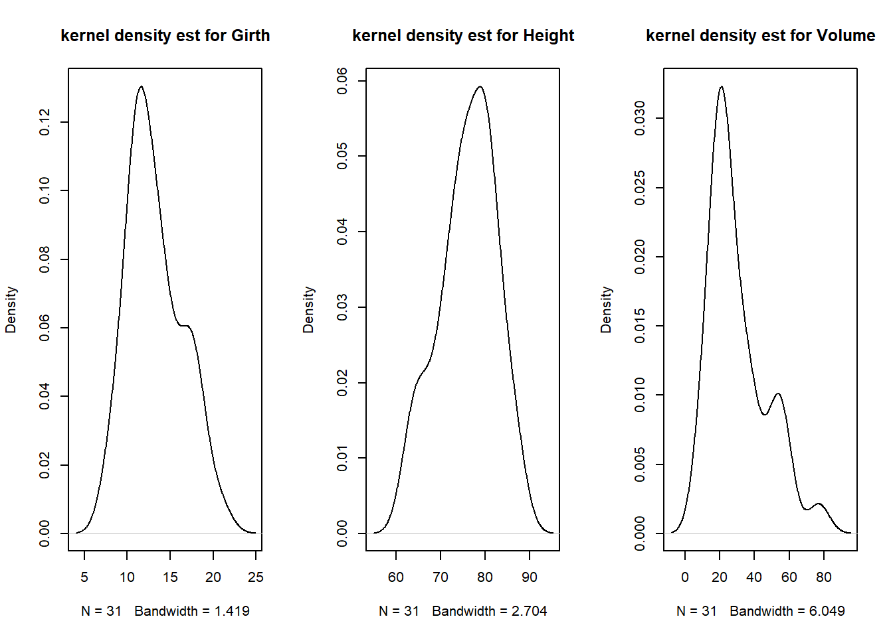
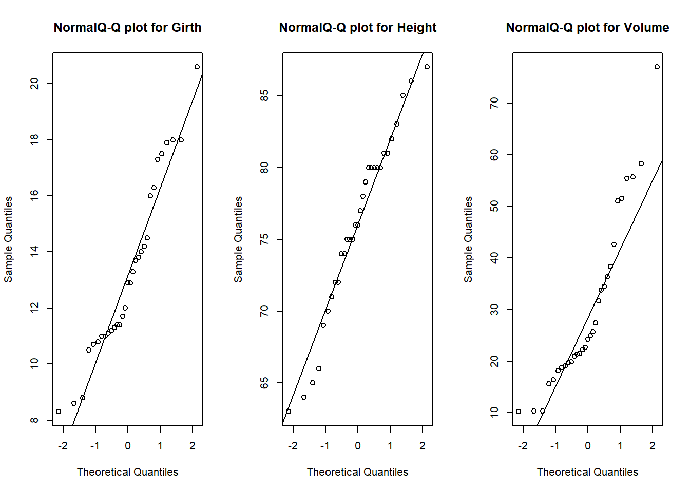

Chapter 1 서론
통계적 문제 해결을 위해 데이터 수집과 수집된 데이터에 대한 적절한 통계 분석 과정이 필요
다양한 통계적 문제들을 해결하기 위해서는 각각의 경우에 적합한 통계 모형과 분석 방법에 대한 이해가 있어야 함
- 상황에 적합하지 않은 통계적 방법은 문제의 본질적 목적을 헤치게 됨
- 따라서 구체적 통계적 방법을 정하기 전에 문제에 대한 명확한 정의와 이해가 필요함
2. 목적의 명확성
- 데이터 제공자는 데이터를 통해 어떤 정보를 얻고자 하는지 명확히 정의하지 않는 경우가 있음
- 여러 가지 데이터 분석을 통해 데이터에 대한 몇 가지 정보가 도출되지만 목적한 정보가 아닐 수 있음
- 통계 방법을 결정하기 전에 데이터를 통해 얻고자 하는 목적을 명시하고 그에 해당하는 적절한 분석 방법을 모색
4. 데이터의 명확한 정보
- 관측 데이터(observational data) 또는 실험 데이터(experimental data) 여부
- 무응답(non-response) 또는 결측값(missing value) 여부
- 질적 변수(qualitative variable) 코딩 방법
- 각 변수의 단위
- 데이터 입력 오류 등 데이터에 대한 정확성
1.1 기술 통계(Descriptive Statistics)
통계 방법론을 적용하기 전에 데이터의 특성을 파악하는것이 중요함
- 변수들에 대한 평균, 표준편차, 최댓값, 최솟값 등 변수의 분포 또는 특성을 알려주는 기술 통계량과 그래프 등으로 표현
각 변수들의 분포, 이상점 등을 파악할 수 있으며 변수들 간의 상관성 등에 대한 정보 파악
가능한 범위를 벗어나는 데이터 탐색 및 데이터에 대한 점검
오류 없는 데이터를 준비하는 과정이 통계분석보다 시간이 더 많이 걸릴 경우도 있으나 정확한 통계분석을 위해 필요한 과정임
Example: 흑체리(black cherry) 나무 데이터
head(trees)## Girth Height Volume
## 1 8.3 70 10.3
## 2 8.6 65 10.3
## 3 8.8 63 10.2
## 4 10.5 72 16.4
## 5 10.7 81 18.8
## 6 10.8 83 19.7- 기술 통계량
summary(trees)## Girth Height Volume
## Min. : 8.30 Min. :63 Min. :10.20
## 1st Qu.:11.05 1st Qu.:72 1st Qu.:19.40
## Median :12.90 Median :76 Median :24.20
## Mean :13.25 Mean :76 Mean :30.17
## 3rd Qu.:15.25 3rd Qu.:80 3rd Qu.:37.30
## Max. :20.60 Max. :87 Max. :77.00- 상자그림(Box plot)
par(mfrow=c(1,3))
boxplot(trees$Girth, xlab="Girth")
boxplot(trees$Height, xlab="Height")
boxplot(trees$Volume, xlab="Volume")
- 히스토그램(Histogram)
par(mfrow=c(1,3))
hist(trees$Girth, xlab="Girth")
hist(trees$Height, xlab="Height")
hist(trees$Volume, xlab="Volume")
- Density plot
par(mfrow=c(1,3))
plot(density(trees$Girth), main="kernel density est for Girth")
plot(density(trees$Height), main="kernel density est for Height")
plot(density(trees$Volume), main="kernel density est for Volume")
- Q-Q plot
par(mfrow=c(1,3))
qqnorm(trees$Girth, main="NormalQ-Q plot for Girth")
qqline(trees$Girth)
qqnorm(trees$Height, main="NormalQ-Q plot for Height")
qqline(trees$Height)
qqnorm(trees$Volume, main="NormalQ-Q plot for Volume")
qqline(trees$Volume)
- 산점도 행렬(Scatter plot matrix)
pairs(trees)
1.2 회귀 분석(regression analysis)
회귀(regression)란 용어는 19세기 후반 영국의 유전학자인 Francis Galton이 생물학적 현상을 설명하는 과정에서 유래
부모의 키에 상관없이 자식들은 결국 평균키가 되는 경향을 보이는 생물학적 현상에 대해 Galton이 이름을 붙였지만, 이후 Yule과 Pearson에 의해 통계적 개념으로 확장
- Yule과 Pearson은 설명변수와 반응변수의 결합분포가 정규분포를 따른다고 가정
1922년 Fisher에 의해 반응변수의 조건부 확률분포가 정규분포를 따른다고 가정
이후 선형회귀, 비선형회귀, 비모수회귀, 베이지안 회귀 방법 등 새로운 방법들이 제안되어 다양한 실무 분야에서 응용됨
회귀분석(regression analysis)
- 반응변수(response variable)와 설명변수(explanatory variable) 간의 관계를 설명하는 통계적 분석 방법
- 반응변수는 종속변수(dependent variable), 설명변수는 독립변수(independent variable)이라 함
- 회귀분석은 변수들 중 하나를 종속변수로 나머지를 독립변수로 하여 이들 변수들이 서로 인과관계를 가질 때 독립변수가 변화함에 따라 종속변수가 어떻게 변하는가를 규명하는 통계기법
- 독립변수와 종속변수 간의 관계 분석 및 상호 관련성을 찾을 때 유용함
- 회귀분석은 연속형 독립변수와 연속형 종속변수 사이의 관계식을 구하고 그 식을 이용하여 독립변수가 주어졌을 때 종속변수를 예측할 수 있는 분석방법
- 한 개의 종속변수와 한 개의 독립변수 사이의 관계를 분석하는 경우 단순회귀분석(simple regression analysis)
- 한 개의 종속변수와 여러 개의 독립변수 사이의 관계를 규명하는 경우 다중회귀분석(multiple regression analysis)
1.3 회귀분석 예제
- 다음은 환자별 혈압 수치와 콜레스테롤 수치를 측정한 데이터이다. 콜레스테롤과 혈압 간의 관계는 어떻게 되는가?
load("dataset/cholesterol.rda")
head(cholesterol, 10)## 환자번호 성별 나이 이완기혈압 수축기혈압 콜레스테롤
## 1 1 m 45 136 90 190
## 2 2 m 35 125 80 190
## 3 3 m 55 150 70 210
## 4 4 f 24 160 90 190
## 5 5 f 29 145 86 205
## 6 6 f 48 155 78 210
## 7 7 f 39 170 75 200
## 8 8 m 42 145 90 220
## 9 9 m 50 136 90 230
## 10 10 m 49 140 98 190- SAT 점수를 측정한 결과는 다음과 같다. Reading 점수와 Math 점수는 서로 연관성이 존재하는가?
load("dataset/sat.rda")
head(sat, 10)## female rdsc vocab matsc
## 1 0 29 42 35
## 2 1 46 48 42
## 3 0 60 48 59
## 4 0 64 45 62
## 5 0 56 51 56
## 6 1 68 66 56
## 7 0 61 69 64
## 8 1 55 51 53
## 9 1 37 42 33
## 10 0 36 39 49- 서울의 23개 지역에서 30분마다 기상 환경 데이터와 함께 대기오염물질인 오존과 pm10 등이 측정되고 매일 서울의 사망자수가 관측되었다. 오존 농도와 사망은 어떤 관계가 있는가?
load("dataset/temprature.rda")
head(temprature, 10)## date temp rain humi winds cir65 res65 cir res total o3mean pm10m
## 1 2012-01-01 -1.5 NA 58.5 1.6 22 13 27 13 115 5.385 49.51
## 2 2012-01-02 2.7 0.1 77.0 1.6 24 8 34 14 108 6.171 104.60
## 3 2012-01-03 1.9 NA 59.0 1.2 28 9 39 12 122 7.204 94.74
## 4 2012-01-04 2.5 NA 54.1 1.2 26 7 42 12 127 5.672 92.27
## 5 2012-01-05 3.6 NA 65.5 1.2 13 7 21 10 91 4.863 126.31
## 6 2012-01-06 3.3 1.8 74.6 2.2 31 14 39 16 129 5.920 102.40
## 7 2012-01-07 -6.0 NA 40.4 5.2 19 7 26 11 103 17.091 40.45
## 8 2012-01-08 -9.1 NA 45.3 4.4 21 14 30 14 114 14.638 60.02
## 9 2012-01-09 -9.3 NA 43.3 4.2 15 9 21 11 101 14.700 61.73
## 10 2012-01-10 -6.7 NA 37.1 4.0 29 9 34 10 127 13.897 35.20- 다음은 미국의 1945년부터 2002년까지 GDP 관련 자료이다. GDP와 여러 관련 변수들과의 관계를 통해 다음해의 GDP는 예측 가능한가?
load("dataset/gdp.rda")
head(gdp, 10)## Year GDP C I G Yd NX
## 1 1960 2376.7 1510.8 272.8 661.3 1664.8 -20.5
## 2 1961 2432.0 1541.2 271.0 693.2 1720.0 -18.4
## 3 1962 2578.9 1617.3 305.3 735.0 1803.5 -25.8
## 4 1963 2690.4 1684.0 325.7 752.4 1871.5 -22.0
## 5 1964 2846.5 1784.8 352.6 767.1 2006.9 -15.0
## 6 1965 3028.5 1897.6 402.0 791.1 2131.0 -26.4
## 7 1966 3227.5 2006.1 437.3 862.1 2244.6 -39.9
## 8 1967 3308.3 2066.2 417.2 927.1 2340.5 -49.2
## 9 1968 3466.1 2184.2 441.3 956.6 2448.2 -66.1
## 10 1969 3571.4 2264.8 466.9 952.5 2524.3 -70.2